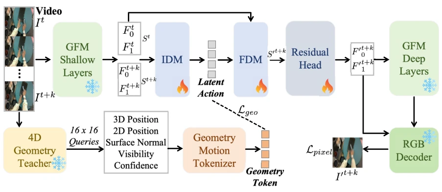
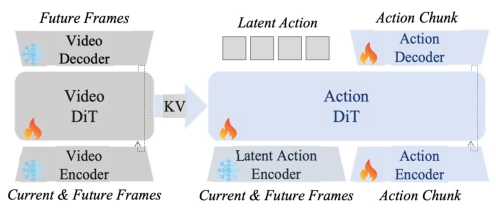
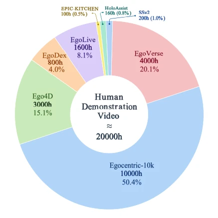
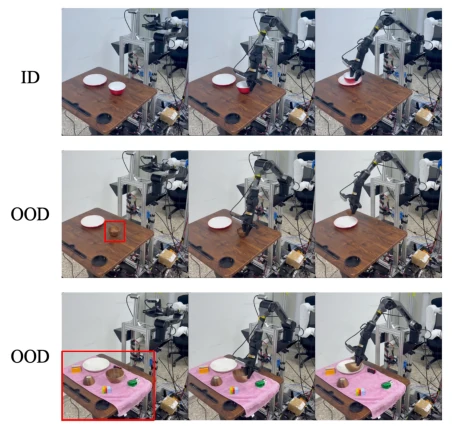
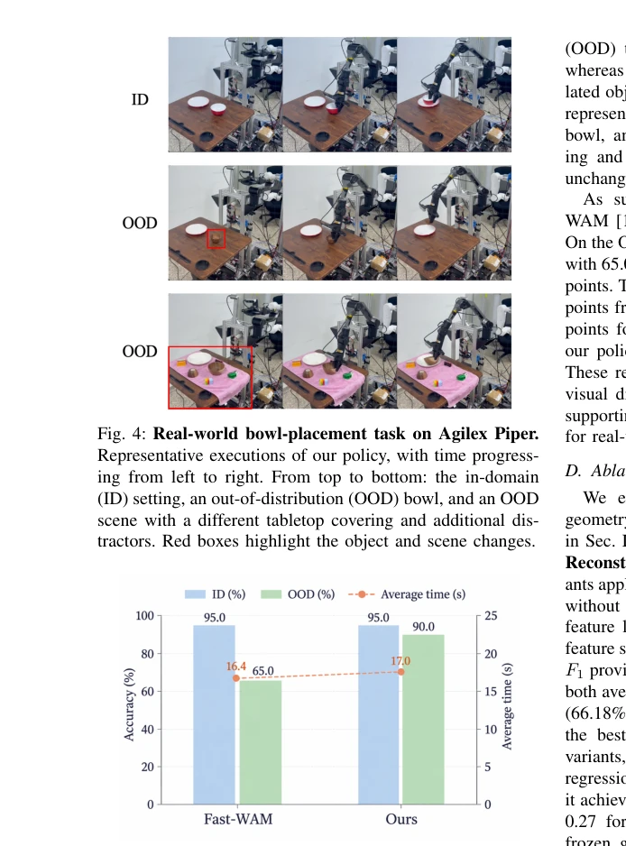
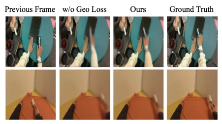

GeoLAM's strategy of "borrowing a corpse to resurrect the soul" is quite adept, using human videos as teaching material but without action labels, relying entirely on geometric priors to hold up. It freezes geometric features and uses a 4D teacher to supervise motion, avoiding the pitfalls of hand-eye tracking like HaWoR [3], and is more "physically aware" than LAPA [4]'s implicit actions. However, this "teacher during training, invisible during deployment" strategy, while saving resources, relies on D4RT [8]'s geometric estimation and may fail under severe occlusion, which the authors also acknowledged in future work. Fortunately, experiments prove this geometric constraint indeed makes implicit actions more reliable, outperforming Fast-WAM [10] by 25 points in real-world OOD scenarios, effectively turning "watching people work" into "actually knowing how to work". Although language instructions are not mentioned, it performs robustly in pure visual control, worth learning from.
Human video data is large in quantity but lacks action labels, making direct learning difficult. Existing methods either reconstruct hand and camera trajectories like HaWoR [3], easily affected by occlusion and computationally heavy, and require mapping to robot control space; or like LAPA [4], relying on future frames to reconstruct implicit actions, easily mixing appearance changes and motion, leading to blurred action bottleneck content. Optical flow constraints [5] or 3D perception [6] are helpful, but lack explicit constraints on geometric structure and often require additional annotations. We need an intermediate representation that can extract motion-retaining information from unlabeled videos, map to robot control space, avoid the trouble of explicit hand reconstruction, while ensuring geometric consistency.
方法Method
框架分两阶段。第一阶段 GeoLAM 预训练：用冻结的几何基础模型（Depth Anything 3）编码视频端点，IDM 压缩状态差为隐式动作 token，FDM 预测未来特征。损失包括像素重建和几何监督。几何监督来自训练专用的 4D 老师（D4RT [8]），提供 3D 位移、残差 2D 运动和表面朝向变化，通过可见性和置信度加权池化，抑制不可靠估计。第二阶段 WAM 训练：冻结 GeoLAM 编码器提供过渡目标，Action DiT 联合去噪隐式动作和机器人动作块，Video DiT 辅助预测未来视频。部署时移除老师和视频生成，仅用当前观测缓存。具体而言，IDM 输出四个 token，FDM 利用浅层特征重建 RGB。几何老师不直接参与推理，仅通过 Loss 引导隐式动作保留几何运动信息，确保下游策略学习时能准确捕捉空间位移和表面朝向变化，实现从人类视频到机器人控制的无缝迁移。此外，视频预测仅作为辅助训练任务，不增加推理成本，保证了部署效率。
The framework is divided into two stages. Stage 1 GeoLAM pre-training: Uses a frozen geometric foundation model (Depth Anything 3) to encode video endpoints, IDM compresses state differences into implicit action tokens, FDM predicts future features. Loss includes pixel reconstruction and geometric supervision. Geometric supervision comes from a 4D teacher (D4RT [8]) dedicated to training, providing 3D displacement, residual 2D motion, and surface orientation changes, suppressing unreliable estimates through visibility and confidence weighted pooling. Stage 2 WAM training: Frozen GeoLAM encoder provides transition targets, Action DiT jointly denoises implicit action and robot action blocks, Video DiT assists in predicting future videos. During deployment, the teacher and video generation are removed, using only current observation cache. Specifically, IDM outputs four tokens, FDM uses shallow features to reconstruct RGB. The geometric teacher does not directly participate in inference, only guides implicit actions via Loss to retain geometric motion information, ensuring downstream policy learning can accurately capture spatial displacement and surface orientation changes, achieving seamless transfer from human video to robot control. Additionally, video prediction is only an auxiliary training task, not increasing inference cost, ensuring deployment efficiency.
Pre-training uses about 20,000 hours of human video (Egocentric-10K, etc.). On LARYBench, GeoLAM regression MSE drops to 0.29, classification accuracy 71.22%, better than LAPA-DINOv3, MSE relative reduction 51.7%. On LIBERO and RoboTwin 2.0 success rates exceed 98% and 92%, performance is robust. In real-world Agilex Piper experiments, OOD scenario success rate 90%, 25 percentage points higher than Fast-WAM [10], and execution time is similar. Ablation shows geometric teacher significantly reduces error, pixel reconstruction alone yields the second-best effect. Visualization indicates geometric supervision reduces motion blur, preserves object contours, especially in dynamic regions.
其他图片Other Figures

Fig. 1: Overview of GeoLAM. Frozen shallow GFM features encode the two video endpoints. The inverse dynamics model (IDM) compresses their transition into latent-action tokens, and the forward dynamics model (FDM) predicts future features from the current state and these tokens. Frozen deep GFM layers and an RGB decoder provide the reconstruction objective Lpixel. During training, a frozen 4D teacher converts reliable 3D/2D motion and surface-normal changes into geometry- motion targets for Lgeo. Snowflakes and flames denote frozen and trainable modules, respectively.

Fig. 2: Geometry-grounded latent actions for the world action model: during training, a frozen encoder supplies continuous transition targets and future-video prediction reg- ularizes the Video DiT, whereas inference jointly denoises latent actions and action chunks using only cached current- observation key–value features. Snowflakes and flames de- note frozen and trainable modules, respectively.

Fig. 3: Composition of the human-video pretraining corpus. The selected clips total 19,860 hours (approximately 20,000 hours). Labels report the rounded duration and mix- ture share from each source.

Fig. 4: Real-world bowl-placement task on Agilex Piper. Representative executions of our policy, with time progress- ing from left to right. From top to bottom: the in-domain (ID) setting, an out-of-distribution (OOD) bowl, and an OOD scene with a different tabletop covering and additional dis- tractors. Red boxes highlight the object and scene changes.

Fig. 5: Real-world success rates and execution time. Bars show in-domain (ID) and out-of-distribution (OOD) task success rates (left axis), and the dashed line shows average execution time in seconds (right axis). Each success rate is based on 20 trials. Our policy matches Fast-WAM in the ID setting and improves OOD success by 25 percentage points.

Fig. 6: Qualitative effect of 4D geometric supervision. Each row shows a human-video transition. From left to right: the previous frame, reconstruction without D4RT supervision (Lpixel only), full GeoLAM reconstruction, and the ground- truth future frame. Geometry supervision reduces smearing around moving hands and tools and better preserves their outlines.